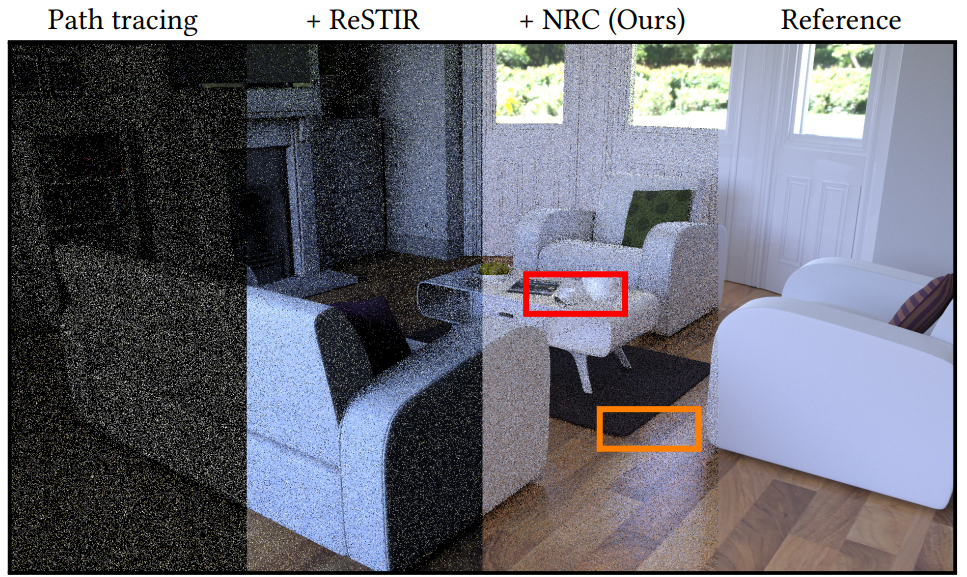
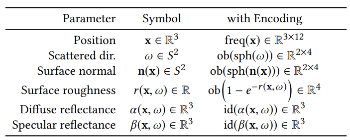
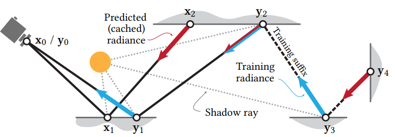
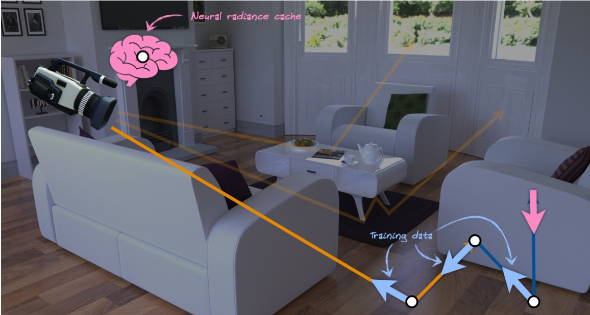
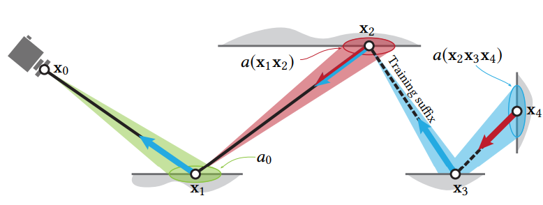

Real-time NRC for Path Tracing
一、导言
离线渲染的时候，一条 Ray 可以 bounce 多次，如 64；而实时光追中，往往只能 bounce 一次。或者说，离线渲染里的 path 是很长的，实时光追里的 path 是很短的。
那如果说一条光线已经完成 bounce 了，但没有 hit 到 light source 或者 skybox，没法计算能量，那就只能抛弃了，这就导致渲染图上的黑像素，当然，使用一些重要性采样算法，比如ReSTIR 可以很好地改善。

Radiance Caching 主要就是把一个点辐射出的 Radiance 编码成 Spherical Harmonics，然后在实时渲染中帮助做 shading。可以作为 precomputation 算法，也可以用来加速实时光追。但如果有 Radiance Cache 的加持的话，那些没有得到能量的 ray，可以直接查找最后一次交点在 Radiance Cache 上的值，就知道能量是多少了。因此 Radiance Cache 可以改善实时光追质量。但是传统的Radiance Caching往往很难控制，需要人为干预或者需要用启发式的方法来减少渲染失真的现象。
在这篇文章中，创新性地使用了神经网络来存储Radiance，而不是使用球谐函数。文中的系统基于以下几个准则设计：
- 动态内容
- 鲁棒性
- 可预测的性能和资源消耗
前两个原则——动态内容和鲁棒性——对预训练网络提出了重大挑战：训练后的模型必须推广到新的配置，甚至是可能从未观察到的内容。
该文章的另外一个创新点在于，网络不需要预训练，而是在渲染的过程中实时训练。
二、理论与实现
NRC的目标是缓存scattered radiance，即下面这项。通俗理解为x点向w发出的光。
$$ L_s(x,\omega) = \int_{\Omega^+}L_i(x,\omega_i)f_r(p, \omega, \omega_o)(n\cdot\omega_i)d\omega_i $$
$L_S$是一个相当复杂的函数，直接计算相当复杂，但是我们可以知道$L_s$和许多参数有关，如$x,\omega,n,albedo, roughness, specular$ 等，那么就可以把这些参数输入到我们的网络里面：
$$ L_s = NRC(x,\omega,n,albedo, roughness, specular ) $$
NRC是一个是通过一个8层64x64的MLP实现。输入的坐标 法线以及view dir都经过了position encoding，使得输入特征与输出尽可能持线性关系。

在单帧的渲染中包括计算像素颜色和更新神经辐射缓存。
这里假设渲染用到了三条 ray（三条橙色线），我们只取其中最下面那一条 ray（实际上选取比例远小于三分之一）作为训练集。之后把所有用作训练集的 ray 延长一小段，也就是比之前增加几次 bounce。论文中管增加的这一段叫 training suffix。
图中橙色的线段就是第一阶段已经 trace 过的 path，蓝色阶段就是训练阶段增加的 path，也就是 training suffix。
我们利用末端的那个新交点（图中粉色箭头处）查找 Radiance Cache，得到了一个 Radiance 值。我们再把这个 Radiance 值沿着光路反向传递回去，按照 path tracing 的算法计算出之前的三个 bounce 点处的能量值，就可以得到三个 training data，也就是图中的白圈 / 蓝色箭头。它们就是三个标签数据！


Path Termination:
所有路径都根据基于路径顶点的area-spread终止，一旦area-spread变得足够大，足以模糊缓存的小范围不准确性，我们就会终止该路径。可以通过下面这个式子估算area-spread:
$$ a(x_1 …x_n) = (\sum_{i=2}^{n}\sqrt{\frac{||x_{i-1}-x_{i}||^2}{p(\omega_i|x_{i-1},\omega)|cos \theta_i|}})^2 $$
$$ a_0 = \frac{||x_0-x_1||^2}{4\pi |cos\theta_0|} $$

当满足$a(x_1…x_n)>c\cdot a_0$时，终止路径。
当光线被选为training ray时，$a(x_n…x_m) > c \cdot a_0$，终止路径。
闪烁问题
文章还提到整个训练过程很不稳定，导致输出图像不停地闪烁。于是他们还对神经网络的 weight 做了 temporal filtering，使用 exponential moving average (EMA)：
$$ \overline{W_t} = \frac{1-\alpha}{\eta_t} \cdot W_t + \alpha \cdot \eta_{t-1} \cdot \overline{W_{t-1}}, where \ \eta_t = 1 - \alpha^t $$
当$\alpha = 0.99$ 时，有最佳结果。